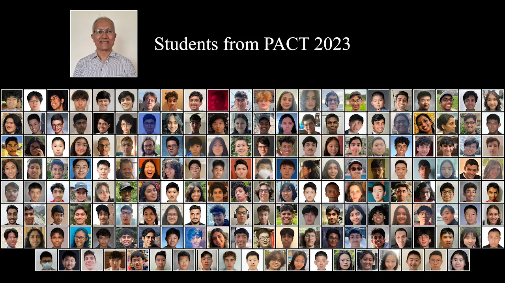
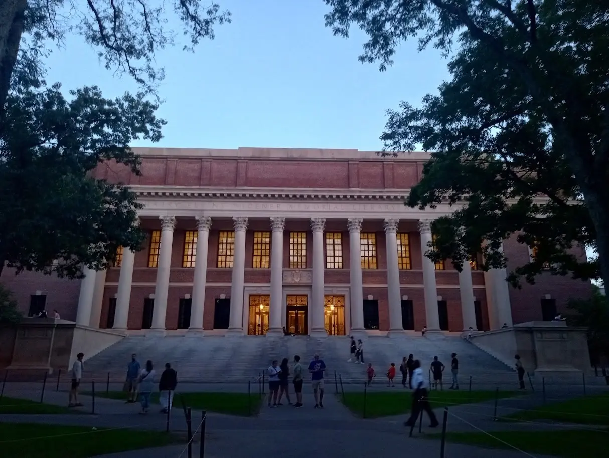

Education
University of Waterloo
Candidate for Bachelor of Mathematics
- Waterloo, Ontario, Canada
- September 3, 2025 – Present (Expected Graduation: April 2030)
- Research Assistant at Department of Applied Mathematics, University of Waterloo
- Courses: Algorithm Design and Data Abstraction (C), Object-Oriented Software Development (C++), Logic and Computation, Functional Programming, Probability, Linear Algebra, Calculus 1/2/3, Number Theory, Mechanics, Waves, and Electromagnetism.
Cameron Heights Collegiate Institute
International Baccalaureate (IB)
- Kitchener, Ontario, Canada
- September 7, 2021 – June 19, 2025
- Courses: SL Mathematics, SL Physics, HL Chemistry, HL Psychology, HL English, and SL French.
- My school offered a limited number of Higher Level courses, so I took them whenever they were offered.
Harvard University Division of Continuing Education
- Cambridge, Massachusetts, United States
- June 21, 2024 – August 9, 2024
- Course: CSCI S-111: Intensive Introduction to Computer Science and Data Structures
- Grade: A (view transcript)
- Credits: 8
- Professor: Dr. David G. Sullivan
PACT Year-Round Program (PACT 2)
University of Pennsylvania
- Philadelphia, Pennsylvania, United States (Remote)
- August 26, 2023 – April 20, 2024
- Professor: Dr. Rajiv Gandhi
Program Intern: Program in Algorithmic and Combinatorial Thinking (PACT 1)
Princeton University
- Princeton, New Jersey, United States (Remote)
- June 28, 2023 – July 27, 2023
- Professor: Dr. Rajiv Gandhi
I am currently a second-year university student (undergraduate) at the University of Waterloo, in the Honours Mathematics Program, and have been doing so since September 3, 2025. Before that, I was an International Baccalaureate (IB) student at Cameron Heights Collegiate Institute.
On April 7, 2023, I was accepted into the Program in Algorithmic and Combinatorial Thinking (PACT), a summer program about theoretical computer science hosted at Princeton University from June 26 to July 28, 2023. It was taught by Dr. Rajiv Gandhi, a professor of Computer Science at Rutgers University–Camden and part-time lecturer at the University of Pennsylvania.
Upon completing the PACT Summer Program, I was invited to its year-round program, which is hosted virtually and again led by Dr. Gandhi.
On February 6, 2024, I was accepted to Harvard University's 7-week Summer School Program. I took CSCI S-111, “Intensive Introduction to Computer Science” under Dr. David G. Sullivan, a professor of Computer Science at Harvard University. The course was an undergraduate-level course that covered the basics of programming and data structures in Java. I completed the course with an A grade.

